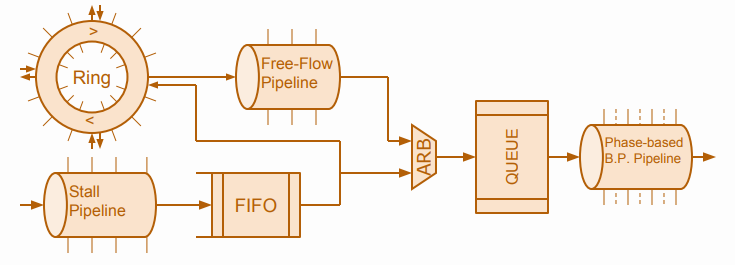

My young brother how is two years younger than me and is in the same college and department as U told me about his
friend how joined GSOC before, so I went to the website found lots of amazing projects but not many related to hardware design.
Until I came across FOSSi which had a lot of amazing projects that it was a challenge to choose among them what project to work on untill i talked to steeve and really believed in the project and the impact it will have on the industry and on my career.
Transaction-Level Verilog (TL-Verilog) is an emerging language extension to System Verilog, Has the ability to define flexible reusable components. For this project, will develop a library of compatible components such as FIFOs, queues, arbiters, elastic buffers, etc. that could form the basis of a new era of hardware design,And will demonstrate the ease of composing these components into sophisticated transaction flows and quickly implementing what are currently considered to be complex designs, such as a complete on-chip network!
This big design with Verilog Takes a huge number of line but using Tl-Verilog the code is less than a hundred line
The library is very generic for example in this line just changing the last cycle will automatically generate a stall pipeline de different depth and you can although change the hierarchy the same way
TL-Verilog interface for Xilinx important modules and macros to make sure to utilize the hardware as good as possible not just focuse on making coding simpler and easier.
For example, in this code, we are initializing 128bit block ram on Xilinx FPGA and that's the interface for it
and it can be instantiated as simple like that
The library contains rams, FIFO and all the dsp macros provided by xilinx wrapped using TL-Verilog
Characterizing and optimizing the physical implementation of WARP-V with different configurations vs. other RISC-V cores. we achived very good result and clock speed comparable to the new RISC-V cores like Picorv32
|
Family |
Device |
LUTs |
Maximum frequency |
|
Kintex |
xc7k480tiffv1156-2L |
206 |
454MHZ |
|
Kintex ultrascale+ |
xcku15p-ffve1760-1LV-i |
206 |
523MHZ |
|
Virtex UltraScale+ |
xcvu3p-ffvc1517-3-e |
203 |
685MHZ |
|
Virtex UltraScale+ |
xcvu3p-ffvc1517-2-e |
202 |
658MHZ |
|
Kintex UltraScale+ |
xcku3p-ffva676-3-e |
203 |
717MHZ |
|
Kintex UltraScale+ |
xcku3p-ffva676-2-e |
201 |
629MHZ |
|
Virtex UltraScale |
xcvu065-ffvc1517-3-e |
207 |
563MHZ |
|
Virtex UltraScale |
xcvu065-ffvc1517-2-e |
207 |
572MHZ |
|
Kintex UltraScale |
xcku035-fbva676-3-e |
203 |
584MHZ |
|
Kintex UltraScale |
xcku035-fbva676-2-e |
210 |
513MHZ |
|
Virtex-7T |
xc7v585t-ffg1761-3 |
206 |
490MHZ |
|
Virtex-7T |
xc7v585t-ffg1761-2 |
206 |
456MHZ |
|
Kintex-7T |
xc7k70t-fbg676-3 |
205 |
507MHZ |
|
Kintex-7T |
xc7k70t-fbg676-2 |
205 |
478MHZ |
|
Family |
Device |
luts |
Maximum frequency |
|
Kintex |
xc7k480tiffv1156-2L |
789 |
238MHZ` |
|
Kintex ultrascale+ |
xcku15p-ffve1760-1LV-i |
1108 |
239MHZ |
|
Kintex UltraScale+ |
xcku3p-ffva676-3-e |
1101 |
282MHZ |
|
Family |
device |
luts |
Maximum Frequency |
|
Kintex UltraScale+ |
xcku3p-ffva676-3-e |
167 |
526MHZ |
|
Kintex UltraScale |
xcku035-fbva676-2-e |
171 |
515MHZ |
|
Kintex |
xc7k480tiffv1156-2L |
169 |
492MHZ |
Integrating Wrap-v into ariane, Inorder to test wrap-v preformance we started integrating it into the ariane cpu so we can compare the preforamnce of the ariane core before and after replacing the core with the wrap-v core and use the functionalities in ariane cpu and tools that ariane cpu is interfaced with but i just started this task it so i will still be working on it after google summer of code ends
Ariane is a 6-stage, single issue, in-order CPU which implements the 64-bit RISC-V instruction set. It fully implements I, M and C extensions as specified in Volume I: User-Level ISA V 2.1 as well as the draft privilege extension 1.10. It implements three privilege levels M, S, U to fully support a Unix-like operating system. It has configurable size, separate TLBs, a hardware PTW and branch-prediction (branch target buffer and branch history table). The primary design goal was on reducing critical path length.